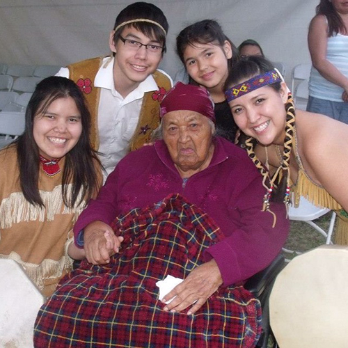
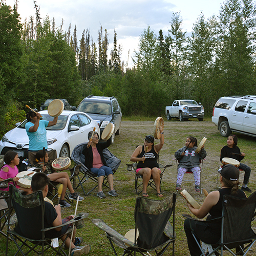
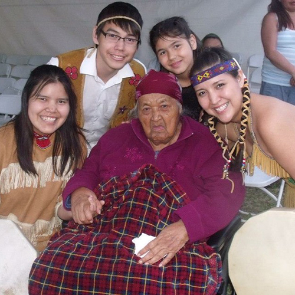
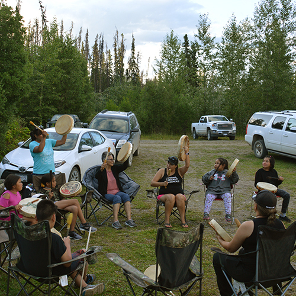

Candice George
Skeh Nek'huna Hohdidul'eh:"Teaching children our ways"
- Performing Artist - Traditional Storyteller - Cultural Facilitator -
Candice is the founder of Skeh Nek'huna Hohdidul'eh. She offers interactive, cultural performances throughout the year. She also has developed and implement various cultural programs, project-based lessons (K-12); as well as, provides community cultural programs, each with a focus on language and culture revitalization.


 


